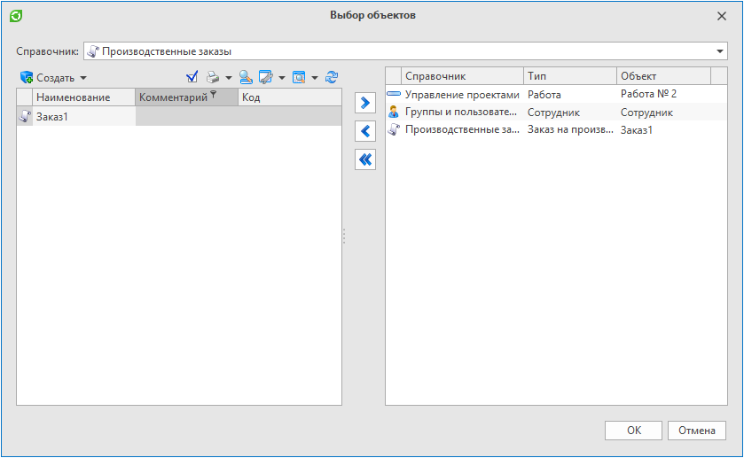

Выбор объектов из справочников |
СоздатьДиалогВыбораОбъектовИзСправочников() - Создает и возвращает диалог выбора объектов из справочников.
C#
// Создает диалог выбора объектов из справочников ДиалогВыбораОбъектовИзСправочников диалог = СоздатьДиалогВыбораОбъектовИзСправочников(); диалог.Заголовок = "Выбор объектов из справочников"; // Возвращает или устанавливает заголовок окна // Показывает диалоговое окно. Возвращает true, если диалог закрыт кнопкой "Ок", в противном случае - значение false if (диалог.Показать()) { foreach (Объект выбранныйОбъект in диалог.ВыбранныеОбъекты) { // Действие над выбранным объектом } }
Результат:
